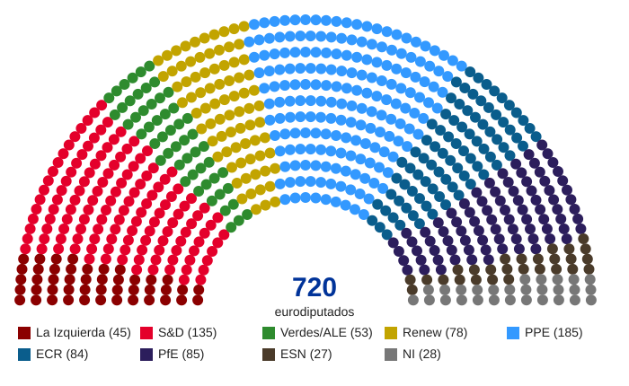

Los grupos políticos del Parlamento Europeo
Los eurodiputados no se sientan por países, sino por grupos políticos que reúnen a partidos de ideología similar. Un grupo necesita al menos 23 diputados de 7 países distintos.

Cómo han votado los grupos en las 100 decisiones
«Lado ganador» indica en cuántas de las 100 votaciones la mayoría del grupo votó lo mismo que el resultado final. «Cohesión» mide qué parte de sus diputados votó igual que la mayoría de su grupo.
| Siglas | Nombre completo | Escaños | Lado ganador | Cohesión | Partidos españoles |
|---|---|---|---|---|---|
| PPE | Partido Popular Europeo | 185 | 95 % | 94 % | PP |
| S&D | Alianza Progresista de Socialistas y Demócratas | 135 | 91 % | 94 % | PSC-PSOE, PSOE |
| PfE | Patriotas por Europa | 85 | 37 % | 81 % | VOX |
| ECR | Conservadores y Reformistas Europeos | 84 | 54 % | 81 % | Independiente |
| Renew | Renew Europe | 78 | 91 % | 92 % | PNV |
| Verdes/ALE | Los Verdes/Alianza Libre Europea | 53 | 83 % | 93 % | BNG, Catalunya en Comú, Compromís, ERC |
| La Izquierda | La Izquierda (GUE/NGL) | 45 | 49 % | 85 % | EH BILDU, PODEMOS, SMR |
| NI | No inscritos | 28 | 44 % | 67 % | JUNTS-UE, SALF |
| ESN | Europa de las Naciones Soberanas | 27 | 20 % | 91 % | — |
¿Qué significa cada posición?
- A favor: el diputado apoya el texto.
- En contra: el diputado lo rechaza.
- Abstención: participa pero no apoya ni rechaza.
- No votó: no participó en la votación.
Más información sobre los grupos en la web oficial (aquí).